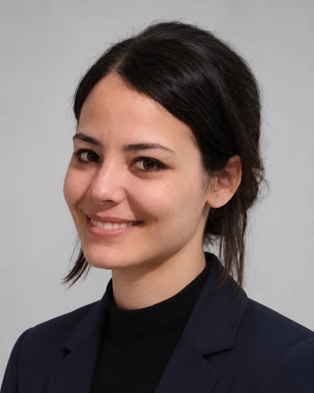

Hydrogeology & fieldwork
Groundwater level measurements, pumping tests, sampling and physicochemical measurements. Experience developed through research and university field investigations.
Piezometry · Pumping tests · SamplingUnderstanding groundwater.
Exploring its interactions with the environment.
A Hydrology and Hydrogeology Master’s graduate from Université Paris-Saclay, I combine field investigations, experimental geochemistry and data analysis to study aquifers, water quality and contaminant transport.
Gif-sur-Yvette, France · National and international mobility

Three complementary approaches to characterising environments and understanding transport processes.
Groundwater level measurements, pumping tests, sampling and physicochemical measurements. Experience developed through research and university field investigations.
Piezometry · Pumping tests · SamplingArsenic and iron mobility, leaching experiments and solution analyses. Interpretation of SEM images and existing XRD results.
Leaching · AAS · Ion chromatographyHydrogeological databases, QGIS mapping and time-series analysis to connect observations with their environmental context.
QGIS · ADES · InfoTerre · PythonResearch, fieldwork and experiments, with a focus on hydrogeology and water quality.
Development of a product based on traditional knowledge: ingredient selection, formulation, dosage, prototypes and testing, through to preparation for commercialisation.
Arsenic and iron mobility in mine waste from Enguialès. Batch and dynamic leaching experiments, leachate monitoring and data synthesis.
Nitrate time series in the Beauce multilayer aquifer, using ADES and InfoTerre data with QGIS mapping.
Optical microscopy and cataloguing of Lower Chelif palynomorphs, with palaeoenvironmental interpretation.
Context, personal contributions and methods, beyond the lines of a CV.
Batch and dynamic experiments to study interactions between mine waste, water and contaminants.
Explore project ↗Nitrate time series, public databases and mapping to investigate a multilayer aquifer.
Explore project ↗Maisse, Hallue and Crau: three university field projects on aquifer hydrodynamics and water quality.
Explore project ↗Scientific communications and a public reference.
Co-author · Conference abstract · GEOPS, Université Paris-Saclay
Read the abstract and author list ↗DOI: 10.5194/egusphere-egu26-960Research workshops · GS GCEP
Interns’ day · IPSL
I am seeking a junior role in hydrogeology, environmental studies or geochemistry. Field investigations, data analysis and scientific reporting are central to my background.
menel.bereksi@gmail.com